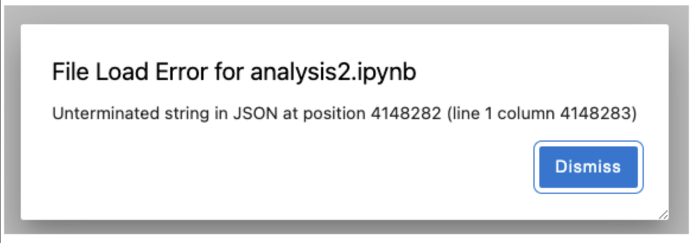

This page contains troubleshooting tips for errors that you may encounter while using Code Workspaces. If you have other issues or are unable to resolve your issue with this guide, contact your Palantir representative.
If you encounter the âUnauthorizedâ error stating that your session may have timed out, follow these steps for remediation:
Foundry applies a strict Content Security Policy to ensure the content rendered in Code Workspaces is properly controlled. For instance, Code Workspaces does not allow loading arbitrary JavaScript from CDNs, as is the case with some Python packages like folium.
If you receive this error for a critical workflow, contact your Palantir representative to discuss potential support for the workflow. Some workflows are already supported, but may require you to run a slightly different command:
You may encounter a package or namespace load failure error as below:
> library("hdf5r")
Error: package or namespace load failed for 'hdf5r' in dyn.load(file, DLLpath = DLLpath, ...):
unable to load shared object '/home/user/libs/r/hdf5r/libs/hdf5r.so':
libhdf5_serial_hl.so.100: cannot open shared object file: No such file or directory
This can occur since Foundry limits the number of Linux packages that are pre-installed on the server in order to reduce the exposure to potential vulnerabilities. However, some R libraries rely on specific system Linux libraries which may not be pre-installed on the server.
Note that some packages are not supported by Code Workspaces
Contact your Palantir representative to discuss the availability of required Linux package(s).
Pip may expect some system dependencies to be pre-installed, while conda bundles all requirements for the Python package to run. The general recommendation is to:
maestro env pip install <package>
maestro env conda install <package>
The octis package exists in Pypi but not in conda.
When running maestro env pip install octis, we encounter the following error:
...
ERROR g++ -pthread -B /home/user/envs/default/compiler_compat -Wno-unused-result -Wsign-compare -DNDEBUG -g -fwrapv -O2 -Wall -fPIC -O2 -isystem /home/user/envs/default/include -fPIC -O2 -isystem /home/user/envs/default/include -fPIC -I/home/user/envs/default/include/python3.10 -c src/libsvm/svm.cpp -o build/temp.linux-x86_64-cpython-310/src/libsvm/svm.o
ERROR error: command 'g++' failed: No such file or directory
ERROR [end of output]
ERROR
ERROR note: This error originates from a subprocess, and is likely not a problem with pip.
ERROR ERROR: Failed building wheel for libsvm
INFO Running setup.py clean for libsvm
INFO Failed to build libsvm
ERROR ERROR: ERROR: Failed to build installable wheels for some pyproject.toml based projects (libsvm)
INFO Installing pip environment
ERROR â Failed to install environment, exit status: "1"
In this case, a dependency (libsvm) seems to require a compiler to build the wheel, so we will need to first install the compiler via the corresponding conda package.
The above error indicates that the missing dependency is g++, therefore we should install the corresponding conda package (in this case, gxx_linux-64), using maestro:
maestro env conda install gxx_linux-64
We can now try installing the pip package by running this command again:
maestro env pip install octis
This time the command should succeed.
This error occurs when the git commit that is being synced is too large. This can happen if the commit contains non-code files, such as output data. Large files are not supported by version control within Code Workspaces. Instead, data can be interactively written back to Foundry, enabling you to easily use and share the outputs of your code workspace.
To find out which files are causing this error, open a terminal within your workspace and execute the following command:
git rev-list --objects --all |
git cat-file --batch-check='%(objecttype) %(objectname) %(objectsize) %(rest)' |
sed -n 's/^blob //p' |
awk '{sum[$3]+=$2} END {for (i in sum) print sum[i], i}' |
sort --numeric-sort --key=1 |
$(command -v gnumfmt || echo numfmt) --field=1 --to=iec-i --suffix=B --padding=7 --round=nearest
To resolve this error, remove any large files from the git history. For instance, to delete all files larger than 10 MB, you can run the terminal command: git filter-repo --strip-blobs-bigger-than 10M. Alternatively, to delete a specific file from the git history, use git filter-repo --path path/to/file.ext --invert-paths.
To prevent this error happening again, update the .gitignore file with the paths or extensions of any large files that should not be synced. For example, to prevent any output CSV files from being synced, add *.csv. Note that you may need to ensure that hidden files are visible in your IDE to view the .gitignore file.
To apply these changes, run git push --force in a terminal. After following these steps, the Sync changes process should now work as expected.
For security reasons, Foundry generally restricts file downloads and uploads to ensure that these activities occur in a proper data governance framework. This means users cannot add a âdownloadâ button or equivalent in a Shiny® or Streamlit application.
To download data from a Jupyter® or RStudio® Workspace, write the data to an output dataset in Foundry first. You can download data from the output dataset using Foundryâs built-in processes, which ensure the application of appropriate data governance restrictions.
A file load error can occur if a user enforced limits on the amount of data that can be downloaded or rendered in the browser. In such scenarios, try running the command jupyter nbconvert --clear-output --inplace notebook.ipynb, replacing notebook.ipynb with the name of the file shown in the error message:

However, note that this command will clear all the cell outputs, including charts.
RStudio® and Shiny® are trademarks of Positâ¢.
Jupyter®, JupyterLab®, and the Jupyter® logos are trademarks or registered trademarks of NumFOCUS.
TensorBoard and any related marks are trademarks of Google Inc.
All third-party trademarks (including logos and icons) referenced remain the property of their respective owners. No affiliation or endorsement is implied.